HemaBot

O HemaBot é um robô desenvolvido no contexto da pandemia como uma forma de transportar amostras e exames laboratoriais de forma segura e automatizada dentro de ambientes hospitalares, evitando a exposição de profissionais a áreas contaminadas. Seu projeto passou por diversas versões de estrutura e aprimoramentos técnicos, incluindo a criação de um modelo alternativo compacto e eficiente chamado MiniHema, voltado para testes e validações rápidas.


.jpg.jpeg)